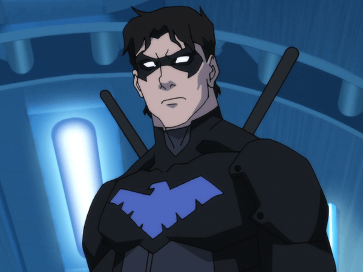

Asa Noturna
Jovem Prodígio de Gotham

"Não sou o Robin. Não sou o Batman. Sou o que eles me ensinaram a ser."
Biografia
Dick Grayson, o primeiro Robin, deixou de ser parceiro do Batman para se tornar o herói independente Asa Noturna. Líder nato, fundou os Jovens Titãs e é conhecido por sua agilidade e habilidades acrobáticas.
Curiosidades
- Filho de trapezistas de circo, viu seus pais serem assassinados.
- Sua base fica em Blüdhaven, cidade vizinha a Gotham.
- Usa bastões elétricos como armas principais.